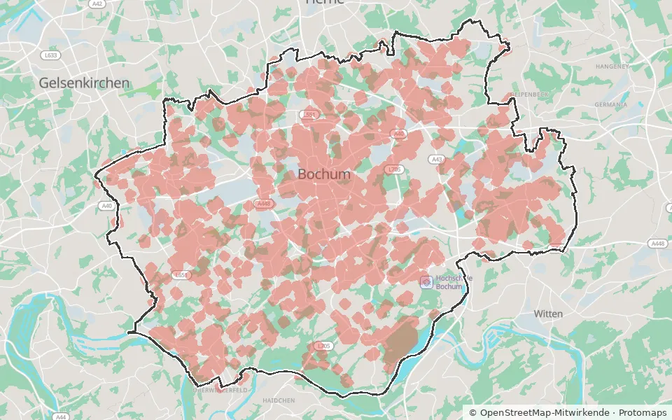
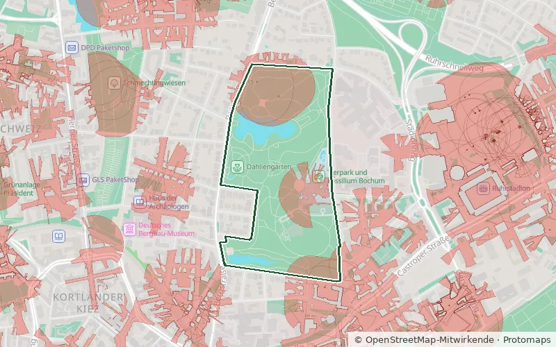
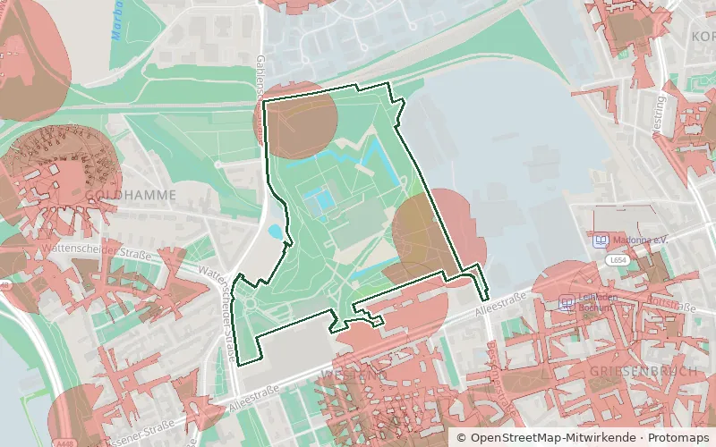
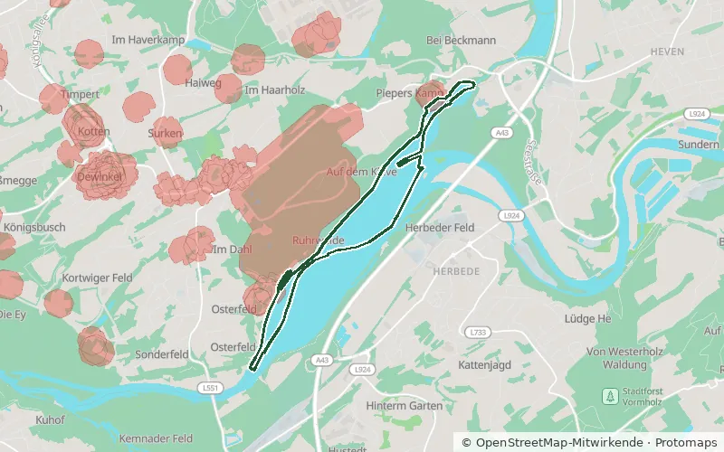
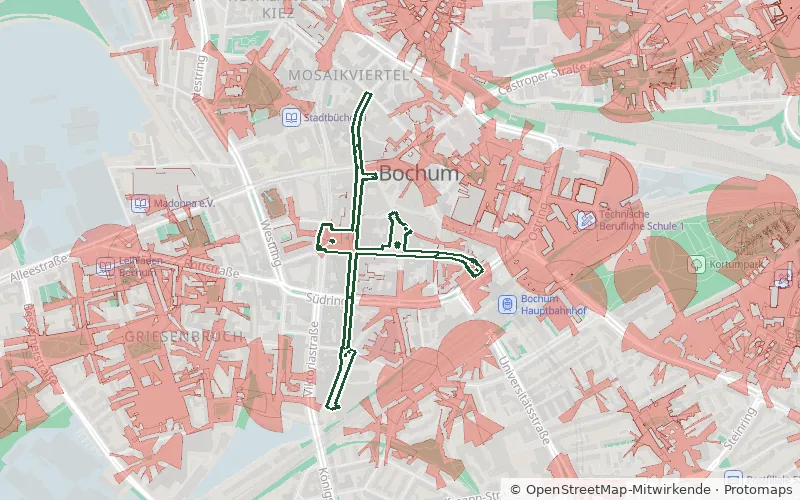
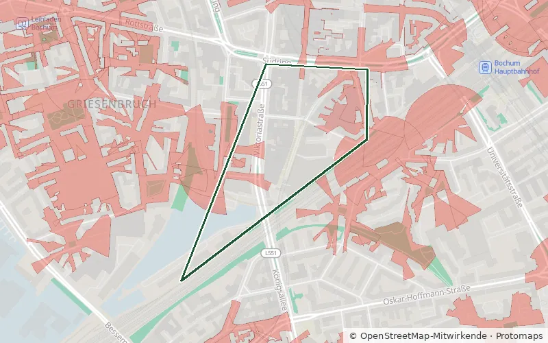
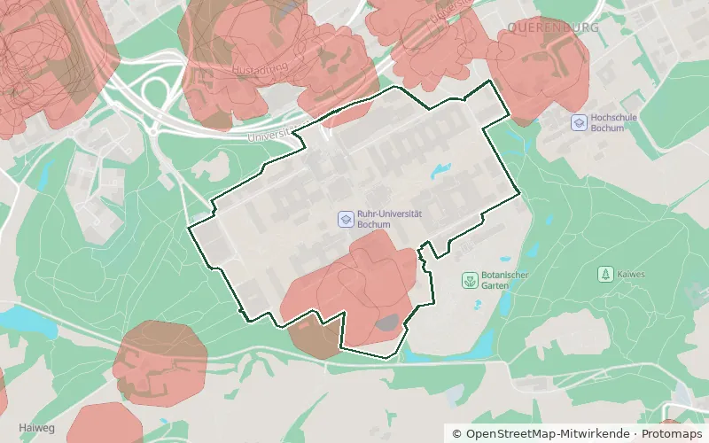

In Bochum ist öffentliches Kiffen auf 31 km² verboten, das sind 21,1 % der Stadtfläche von 146 km². Grund sind 1 667 Einrichtungen wie Schulen und Spielplätze: In ihrer Sichtweite, bis 100 Meter vom Eingang und ohne Gebäude dazwischen, verbietet § 5 KCanG den Konsum. Dazu kommen die Fußgängerzonen von 7 bis 20 Uhr und überall die Gegenwart von Minderjährigen.
Bochum ist dicht bebaut, mit vielen Spielplätzen und Sportanlagen auf wenig Fläche; auch in den Wäldern liegen 19,2 % in einer Zone.

Woher die Zonen kommen
| Einrichtung | Anzahl | Zonenfläche |
|---|---|---|
| Schulen | 122 | 5,8 km² |
| Kitas und Kindergärten | 176 | 4,2 km² |
| Kindertagespflege | 25 | 0,5 km² |
| Spielplätze | 535 | 11,0 km² |
| Kinder- und Jugendeinrichtungen | 52 | 1,0 km² |
| Sportstätten | 756 | 17,0 km² |
| Anbauvereinigungen | 1 | unter 0,1 km² |
Jede Art für sich gezählt, Überlappungen also mehrfach. Anbauvereinigungen nur, soweit in OpenStreetMap eingetragen.
Die meisten Zonen gehen auf die 756 Sportstätten zurück, danach auf die 535 Spielplätze.
Auf Spiel-, Bolz- und Skateflächen und auf Schulhöfen verbietet die ordnungsbehördliche Verordnung der Stadt außerdem, sich „unter dem Einfluss“ von Alkohol oder anderen berauschenden Mitteln aufzuhalten; dort darf man sich nur von 8 bis 20 Uhr aufhalten, und Kinderspielplätze sind für Kinder bis 14 Jahre da (Verordnung).
Parks und Kemnader See
Im Stadtpark liegen 33 % der Fläche in einer Zone, um zwei Spielplätze im Park, im Westpark an der Jahrhunderthalle 24 %, im Südpark 33 %.


Am Kemnader See liegt kaum etwas in einer Zone (3 % der Wasserfläche). Das Bochumer Ufer gehört dort der Freizeitgesellschaft Metropole Ruhr und fällt nicht unter die Verordnung der Stadt (Verordnung, oben); es gilt das Cannabisgesetz. Auf einem 100 Meter breiten Streifen Land entlang der Ruhr liegen 7 % in einer Zone.

Innenstadt und Bermudadreieck
Eine amtliche Liste der Bochumer Fußgängerzonen haben wir nicht gefunden. Belegt ist die Kortumstraße vom Südring bis zur Brückstraße mit dem Husemannplatz, über die Sondernutzungssatzung (Sondernutzungssatzung). Dort gilt von 7 bis 20 Uhr Konsumverbot; blau sind die Fußgängerbereiche aus OpenStreetMap.
Von Kortumstraße, Dr.-Ruer-Platz, Husemannplatz und Huestraße liegen außerdem 44 % in einer Sichtweiten-Zone, vor allem um Jugendeinrichtungen an der Straße. Der Dr.-Ruer-Platz liegt fast außerhalb (2 %).

Im Bermudadreieck sind es 23 %, um den CVJM, die Jugendherberge und ein Fitnessstudio im Viertel. Ob das Ausgehviertel Fußgängerzone ist, ist nicht belegt; die Stadt nennt es in ihren Verfügungen „Ausgehviertel“.

Hochschulen und Stadion
Hochschulen sind nach § 5 KCanG keine Verbotsorte. Vom Campus der Ruhr-Universität liegen 15 % in einer Zone, um die Kita und die Sportanlagen auf dem Gelände. Die Hausordnung der Universität verbietet Cannabis in den Gebäuden und auf den Nichtraucherflächen an den Gebäuden, Alkohol auf dem ganzen Gelände (Hausordnung der RUB). Im Ruhrstadion verbietet die Stadionordnung des VfL, Drogen jeder Art mitzubringen, ausdrücklich auch medizinisches Cannabis (Stadionordnung).

Was sonst noch gilt
In Nordrhein-Westfalen kostet ein Verstoß 50 bis 500 Euro, vor Minderjährigen 300 bis 1.000 Euro (Land NRW). Auf Volksfesten wie Bochum Total müssen die Veranstalter Verstöße verhindern, notfalls mit einem Verbot (Erlass, Mai 2024). Eigene Verbotszonen für Cannabis hat Bochum nicht (Stand 27. November 2026).
Häufige Fragen
Wo darf man in Bochum kiffen?
Nach § 5 KCanG außerhalb der roten Flächen, etwa im Weitmarer Holz (11 % in einer Zone) und in weiten Teilen des Westparks (24 %). Tagsüber nicht in den Fußgängerzonen, nie in Gegenwart von Minderjährigen und nicht gegen ein Hausrecht. Weiß heißt nicht sicher erlaubt: Hecken, Bäume und fehlende Einrichtungen kennt die Karte nicht.
Darf man im Bermudadreieck kiffen?
Wo keine Zone liegt und keine Kinder oder Jugendlichen dabei sind, verbietet es § 5 KCanG nicht. In den Lokalen und auf ihren Terrassen kann der Wirt es per Hausrecht untersagen.
Wie genau ist das?
Täglich aus OpenStreetMap gerechnet, mit Gebäuden als Sichthindernis; die Zahlen hier sind vom 27. November 2026. Eine Orientierungshilfe, keine Rechtsauskunft (wie gerechnet wird).
Fehlt eine Einrichtung? Korrekturen in OpenStreetMap stehen am Tag darauf auf der Karte; bitte nur eintragen, was es vor Ort gibt.